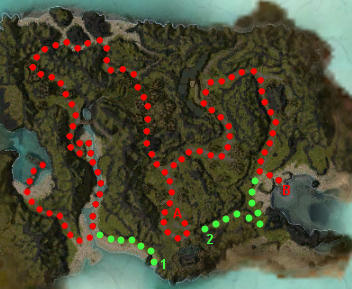

Elite: None / not listed
M14
Sanctum Cay
◉ Mission Map

Click to enlarge · Local cache · Wiki
Summary (click to expand)
Any character can simply walk into the outpost from Stingray Strand and start the mission. Completing Riverside Province also brings the party here.
Region: Kryta · Mission: 14 of 25 · Type: Cooperative
✓ Objectives
Deliver the Scepter of Orr to Vizier Khilbron and rendezvous with Evennia on the other side of the island.
- Locate the Vizier and deliver the Scepter.
- Make your way to the docks on the opposite side of the island.
- *BONUS* Help the Restless Spirit find his final resting place.
- ADDED: You have been betrayed! Evennia has been taken. Meet the Vizier at the docks to make your escape.
- ADDED: Defend the Vizier while he summons a ship for your escape. Get on the boat when he is done.
- Get on the boat!
→ Walkthrough
Talk to Evennia and get the Scepter of Orr. Holding it grants +1 energy regeneration, and when dropped it increases the maximum energy of nearby allies by 10.
Head south past the Inferno Imps onto the beach with Lightning Drakes, then follow the river north. There are undead patrols at the bridge; consider pulling the mobs apart for safety.
Cross the poisonous swamp with the Bone Dragons and find a gate lever - pull it once to open the gate. Continue up the hill to meet Vizier Khilbron (point A), and a cinematic will trigger. He will summon undead allies to aid the party. The party leader can talk to the Smoke Phantoms so that they follow the party, instead of running off on their own (and soon thereafter die to the White Mantle).
Escape to the eastern shore defeating the White Mantle on the way. Find the docks (point B) and the Vizier will appear again. Protect the Vizier while he summons a ship. White Mantle groups will then approach from both sides. Finish each group before the next wave comes or the party may be overwhelmed. When the boat appears, any one player boarding it will end the mission. Sending heroes or henchmen onto it will not end the mission.
★ Bonus

The Restless Spirit's final resting place
The bonus requires that the party escorts a Restless Spirit to his final resting place. Although it is invulnerable to damage, the bonus can be tricky because (a) the spirit can get stuck on fixed objects or body blocked by allied spirits or minions, (b) it changes its following mechanic midway through the mission, (c) it lags behind the party, and (d) it is not necessarily affected by party-wide speed boosts.
The spirit can be found after getting past the Fire Imps, at the end of the Lightning Drake beach (point 1). Have the scepter-bearer speak to it once and it will follow the scepter around, depending on who is carrying it. Once the party reaches the lever of the fort where the Vizier awaits, make sure that the spirit follows inside (and is not lagging behind); after the Vizier takes the scepter the cinematic is triggered, the gate will be locked, and the spirit will be stuck outside (preventing completion of the bonus).
After talking to Khilbron, speak to the spirit again so that it begins following the party. Without the scepter, the spirit will usually follow the nearest player, but (as with any ally or follower), it might instead move towards the nearest player in motion (and within compass range). Keep an eye on the spirit at all times to make sure it remains close to the party.
The bonus only requires a slight detour from the docks to reach the cemetery (point 2), which can be done by hugging the cliffs. The event will not trigger until you get close to the docks. Alternatively, head for the docks first, defend the Vizier and exterminate all opponents and then lead the spirit to its resting place before getting on the boat.
◆ Hard Mode
- Consider anti-caster skills against the Inferno Imps who use Rodgort's Invocation.
- Be wary of Lightning Drakes spiking with Mind Shock and Lightning Orb.
- Hugging the rocks "walls" both north and west of the docks will not trigger the Vizier on the docks. Hugging the northernmost rocks will spawn the White Mantle enemies that would otherwise spawn while the Vizier performs his ritual. This allows the party to dispatch them without having to worry about protecting an NPC. When the waves from the east have stopped spawning, the waves from the south will have stopped and be standing on the pier. To avoid spawning the Vizier next to them, use a longbow or flatbow from the raised platform directly west of the docks to draw enemies away. This allows a safe pull, as well as a nicely balled up group of enemies. It's not recommended though, because Vizier sometimes spawns and gets oneshoted.
- If the party is worried that the charging waves may be overwhelming, consider clearing the areas south and east of the docks first. Just out of sight north of the beach in the east is a narrow pathway, at the end of which is the location of all the foes that will charge the docks. The path is a great bottleneck for skills such as Panic, and Psychic Instability. The foes that charge the docks from the south side are not already present on the map and must be cleared once spawned.[verification requested] This will greatly reduce pressure and the party can focus on clearing only waves from the south.
☠ Bosses & Elites
Elite: None / not listed
Elite: None / not listed
Elite: None / not listed
Elite: None / not listed
Elite: None / not listed
Elite: None / not listed
Elite: None / not listed
Elite: None / not listed
✦ Tips & Notes
Skill recommendations
- Anti-caster skills to counter White Mantle Savant's Searing Heat and Ward Against Elements, as well as most other enemies encountered during this mission.
Notes
- It takes approximately 2 minutes and 20 seconds to summon the boat.
- This time can be speed up by casting Time Ward in range of Vizier Khilbron.
- The Restless Spirit will follow the party onto the boat if the bonus was not completed before the cinematic triggers.
- Despite the objectives and Vizier's dialogue stating that Evennia has been taken by the White Mantle, she remains in her initial spawn point for the entirety of the mission.
- Complete exploration of the mission area contributes 1.4% to the Tyrian Cartographer title.
- This includes a large chunk of the ocean, which is cleared by viewing the end-cinematic.
- Hug the cliffs while passing the docks to avoid summoning the Vizier, otherwise mantle will likely spawn near the docks and will instantly kill the Vizier when he appears (failing the mission).
- Alternatively, stand with the Vizier and outlast the foe spawns, without loading onto the boat when he tells you to. You may explore once there are no more waves incoming, and move onto the boat when you are ready to complete the mission.
- After completing this mission, the party will be moved to The Amnoon Oasis.
- As with all enemies spawned by triggers or skills, the group of White Mantle that approaches the docks from the south can be pulled away from the docks and when aggro is subsequently broken, these enemies will attempt to run back to the pier in a straight line. This can cause them get stuck on walls or other obstructions, splitting up the large group into smaller, more manageable groups.
- Completion of this mission will fill in page #7 of The Flameseeker Prophecies storybook.